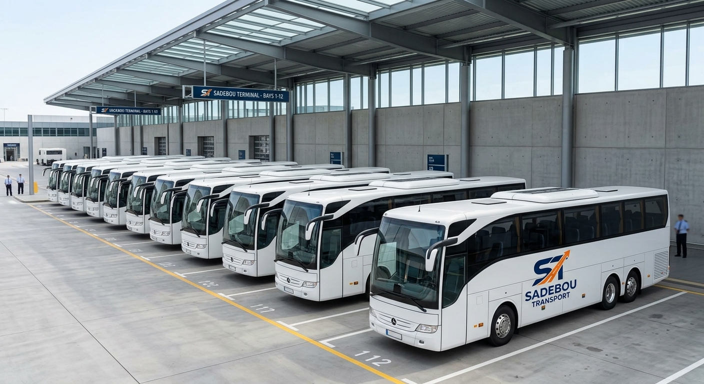
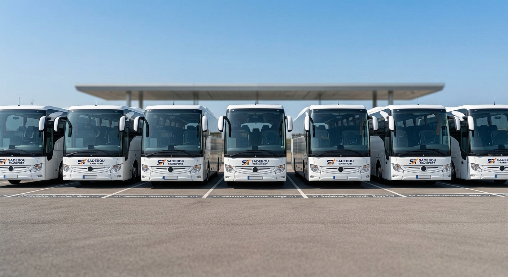
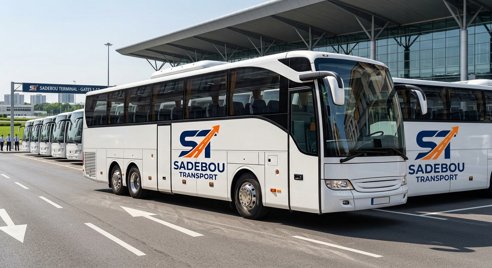

sadebou transport
Sadebou Transport (ST), votre partenaire de confiance pour tous vos déplacements, est fier de vous accueillir au sein de sa gare routière moderne et chaleureuse. Notre mission est de vous offrir une expérience de voyage unique, alliant sécurité, confort et ponctualité. Dès votre arrivée en gare, notre équipe dynamique et professionnelle se tient à votre entière disposition pour vous guider, faciliter vos réservations et veiller à votre bien-être.


• Une flotte de bus modernes : Voyagez en toute sérénité à bord de nos véhicules récents, rigoureusement entretenus et équipés pour votre plus grand confort.
• Un accueil chaleureux : Un personnel qualifié à l'écoute de vos besoins pour vous garantir un service client de premier ordre.
• Le respect des horaires : Parce que votre temps est précieux, nous faisons de la ponctualité notre priorité absolue.
• Un cadre sécurisé : Une gare organisée et encadrée pour assurer la tranquillité de nos passagers et de leurs bagages.
•Que vous voyagiez pour le travail, en famille ou pour le plaisir, Sadebou Transport (ST) met tout en œuvre pour que chaque trajet soit un moment agréable.
Sadebou Transport (ST) : En route vers votre destination, avec l'esprit tranquille !
Que vous voyagiez occasionnellement, régulièrement, ou que vous utilisiez notre service d'expédition de colis, vous bénéficiez du meilleur rapport qualité-prix du marché, sans aucun frais caché.
Découvrez ci-dessous le détail de nos tarifs selon votre destination et vos besoins :
•Abidjan - Bouaké : 6000 FCFA
•Abidjan - korhogo : 13 000 FCFA
•Abidjan - Bamako : 30 000 FCFA
•Bouaké - Korhogo : 7000 FCFA
•Bouaké - Bamako : 25 000 FCFA
•Korhogo - Bamako : 17 000 FCFA
